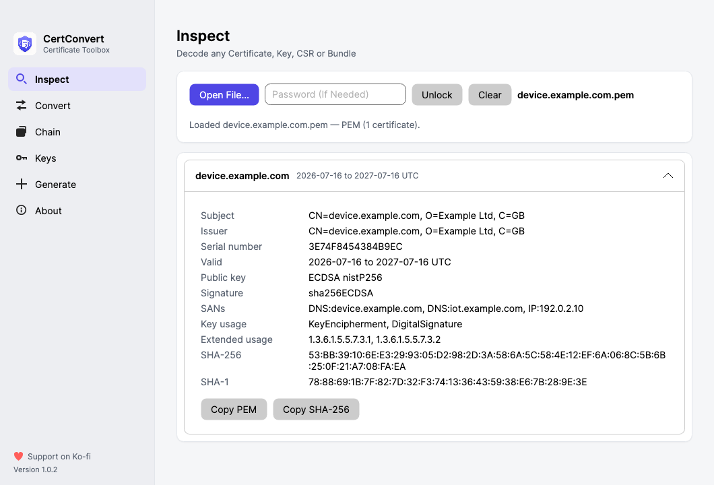

CertConvert is a self-contained desktop app and command-line tool for X.509 certificates. Convert PEM to PFX without OpenSSL, order and validate a certificate chain, inspect any certificate, key or bundle, and generate keys, CSRs and self-signed certificates — all on your own machine, with no shell commands to memorise.
Free and open source (MIT). Runs fully offline — your keys never leave your machine.

Formats are detected from file content, not extensions, so the .cer that is secretly PEM just works. Everything runs locally — there is no online converter to paste your key into.
PEM, DER (.cer/.der), PKCS #7 (.p7b) and PKCS #12 (.pfx/.p12), in both directions — including a p7b to pem converter that works offline.
Drop root, intermediate and device certs in any order; this certificate chain order tool sorts them automatically, validates the chain offline and exports a PEM bundle, P7B or PFX.
Read subject, issuer, validity, SANs, key usage and fingerprints from any certificate, key, CSR or bundle. Drag it in and read it.
Convert private-key formats (PKCS #8, PKCS #1, SEC 1, encrypted or not) and check whether a key matches a certificate.
Create keys, CSRs and self-signed certificates (RSA or ECDSA) with SANs and CA options — the openssl req workflows, without OpenSSL.
The same binary is a desktop app when you open it and a command-line tool when you pass it arguments. Script it, or click it.
Unlike an online certificate converter, CertConvert does its work entirely on your own computer. It never uses the network on its own — no telemetry, no outbound connection of any kind. The single exception is an optional check for a newer version on GitHub, which is off by default.
All cryptography is the .NET platform’s own libraries. There is no third-party crypto code, and private keys are handled in process — never imported into the operating-system key store.
Read the security postureNothing, unless you ask for an update check.
CertConvert is MIT-licensed and free. Grab a build for macOS or Windows — the .NET runtime is bundled, so there is nothing else to install.